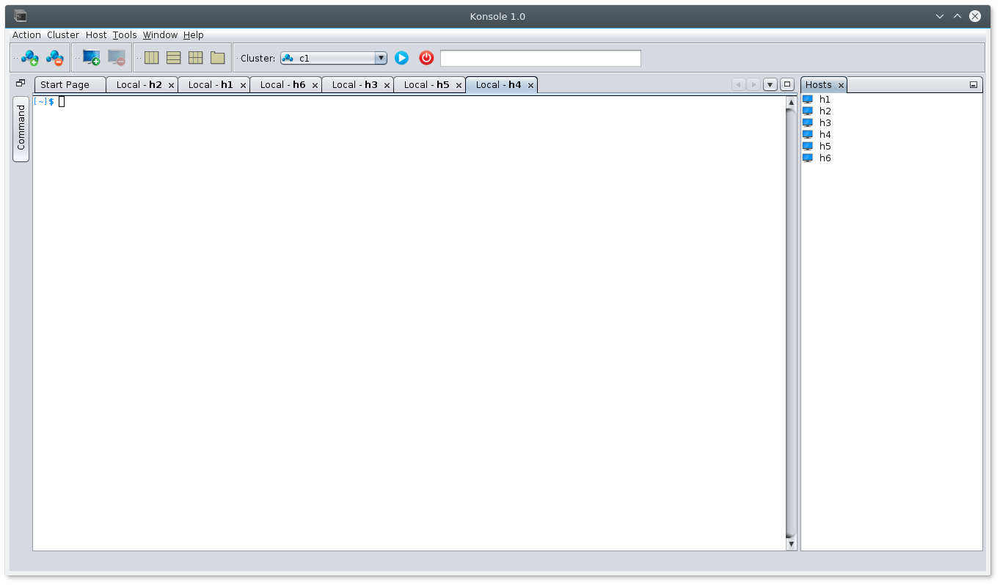
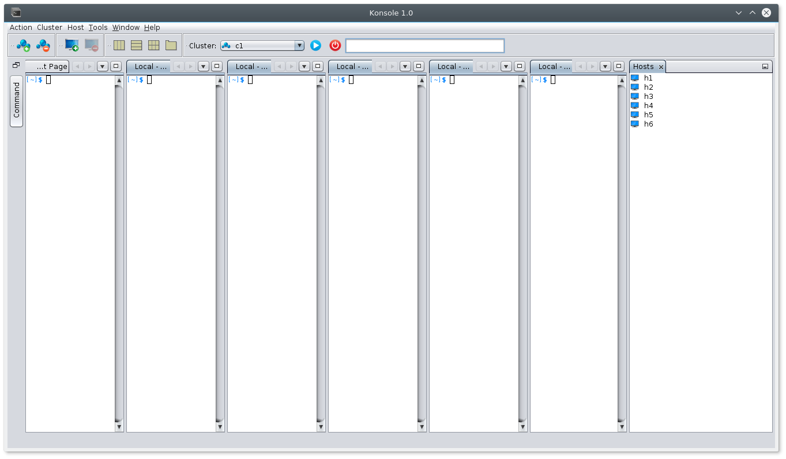
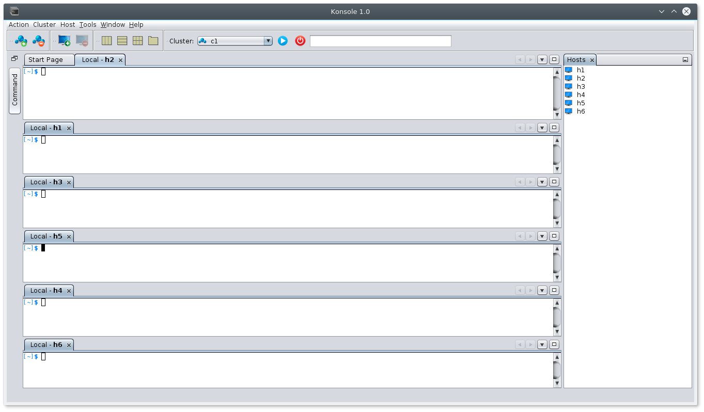
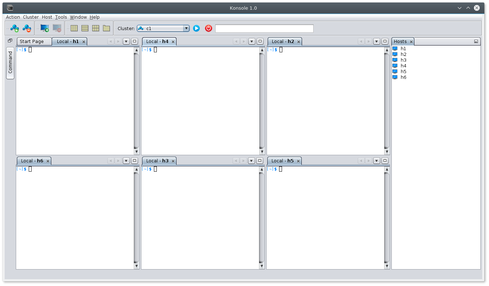

JSSH
JSSH allows you to open terminals to multiple hosts. It allows you to tile them in different modes. It also saves your configuration and provides a namespace to group the machines.
Available modes
Tab View Vertical View Horizontal View Matrix ViewAdding hosts
- Click on 'Add Cluster' button to add a cluster, a namespace
- Click on 'Add Host' button to add a host. You can also give multiple host names separated by space or comma
- Click on 'Open Cluster' button to connect to all the hosts in the selected cluster
- Once host is added you will be able to associate a name with each host by going to Window->IDE Tools->Properties and select a host from host window and edit its name in properties window.

Tiling windows
Install the following plugin to enable tilling of windows in multiple positions using simple clicks. Below are the steps to install the plugin.
- Click here to download the plugin (the .nbm file)
- Open JSSH
- Go to Tools->Plugins->Downloaded->Add Plugins. Select the downloaded file.
- Click 'Install' and follow the instructions shown
- If it is installed successfully, you will see a yellow color buttons in your toolbar as shown above.
Executing commands
You can type the command on the text box that is present in the toolbar and press ENTER key. Or if the command is too big to fit in that text field, you can go to Windows->Commands and type your command in the bigger text box and press ENTER key to execute.